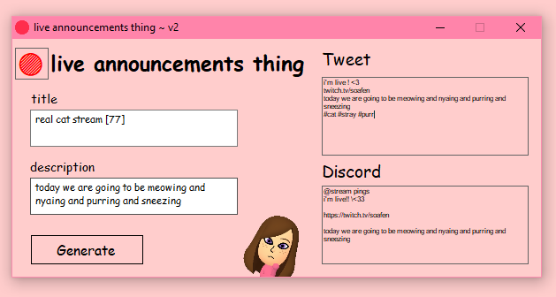

live announcements thing
paste the thing here, copy the thing there

live announcements thing is a program i made to ease the hectic nature of going live on three platforms at once. you paste the title and description of the stream and the program spits it out in both Twitter announcement and Discord post form. it also allows for editing the text to add hashtags, and to copy the red live circle emoji that i add to my twitter name while live. you can fork this project on GitHub to fit it to your own needs if you like ^^
This webpage was partially generated by Bing AI.